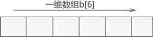
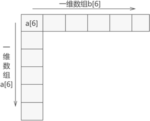

什么是数组存储结构
前面学习数据结构的过程中，总是使用数组作为顺序表的底层实现，给我们一种 "数据结构中，数组的作用就是实现顺序表" 的错误认识。其实，数组的作用远不止于此。
本节将从数据结构的角度讲解数组存储结构。
从本质上讲，数组与顺序表、链表、栈和队列一样，都用来存储具有 "一对一" 逻辑关系数据的线性存储结构。只因各编程语言都默认将数组作为基本数据类型，使初学者对数组有了 "只是基本数据类型，不是存储结构" 的误解。
不仅如此，数组和其他线性存储结构不同，顺序表、链表、栈和队列存储的都是不可再分的数据元素（如数字 5、字符 'a' 等），而数组既可以用来存储不可再分的数据元素，也可以用来存储像顺序表、链表这样的数据结构。
比如说，数组可以直接存储多个顺序表。我们知道，顺序表的底层实现还是数组，因此等价于数组中继续存储数组。这与平时使用的二维数组类似。
根据数组中存储数据之间逻辑结构的不同，数组可细分为一维数组、二维数组、...、n 维数组：
本节将从数据结构的角度讲解数组存储结构。
本节所讲的数组，要将其视为一种存储结构，与平时使用的数组基本数据类型区分开。
一说起数组，我们的印象中数组往往是某一门编程语言中包含的具体数据类型，其实不然。从本质上讲，数组与顺序表、链表、栈和队列一样，都用来存储具有 "一对一" 逻辑关系数据的线性存储结构。只因各编程语言都默认将数组作为基本数据类型，使初学者对数组有了 "只是基本数据类型，不是存储结构" 的误解。
不仅如此，数组和其他线性存储结构不同，顺序表、链表、栈和队列存储的都是不可再分的数据元素（如数字 5、字符 'a' 等），而数组既可以用来存储不可再分的数据元素，也可以用来存储像顺序表、链表这样的数据结构。
比如说，数组可以直接存储多个顺序表。我们知道，顺序表的底层实现还是数组，因此等价于数组中继续存储数组。这与平时使用的二维数组类似。
根据数组中存储数据之间逻辑结构的不同，数组可细分为一维数组、二维数组、...、n 维数组：
-
一维数组，指的是存储不可再分数据元素的数组，如图 1 所示；

图 1 一维数组存储结构示意图
-
二维数组，指的存储一维数组的一维数组，如图 2 所示；

图 2 二维数组存储结构示意图
- n 维数组，指的是存储 n-1 维数组的一维数组；
注意，无论数组的维数是多少，数组中的数据类型都必须一致。
由此，我们可以得出这样一个结论，一维数组结构是线性表的基本表现形式，而 n 维数组可理解为是对线性存储结构的一种扩展。关注公众号「站长严长生」，在手机上阅读所有教程，随时随地都能学习。内含一款搜索神器，免费下载全网书籍和视频。

微信扫码关注公众号